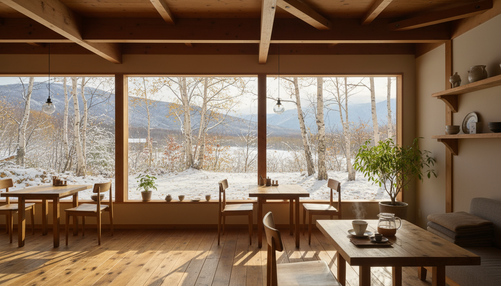

北海道の自然と、一杯のコーヒー。
店内イメージ
CONCEPT
北海道の大地が育んだ素材を、丁寧にひとつずつ。
焙煎したてのコーヒー豆。
地元の牧場から届く、搾りたてのミルク。
季節ごとに変わる、旬の果実やハーブ。
ここは、時計を気にしなくていい場所。
窓の外に広がる木々を眺めながら、
ただ静かに、一杯のコーヒーと向き合う。
北欧のヒュッゲと、日本の「間」が出会う空間で
あなただけの心地よい時間を見つけてください。
MENU
素材の味を活かした、やさしい一品。
※ 価格は全て税込です。季節により内容が変わります。
INFORMATION
店名
森のほとり
住所
〒000-0000
北海道〇〇市〇〇町1-2-3
電話
000-0000-0000
営業時間
11:00 - 18:00（L.O. 17:30）
定休日
毎週水曜日
席数
18席（テーブル12席・カウンター6席）
駐車場
あり（5台）
ACCESS
〇〇駅から車で10分 / 駐車場5台完備
Google Map をここに埋め込み
お車で
〇〇駅から約10分
〇〇ICから約15分
バスで
〇〇バス停 下車
徒歩3分
駐車場
店舗前に5台分
無料でご利用いただけます